THE FOUNDATION
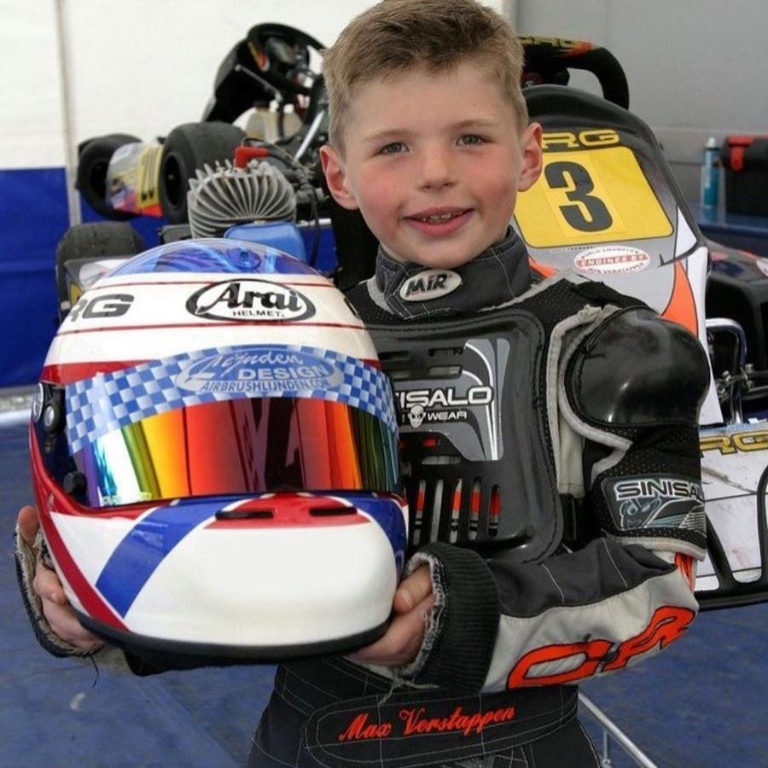
Max began karting at a young age, developing exceptional racecraft, precision, and competitive instinct through years of competition. Those early experiences laid the foundation for his journey to Formula 1.
“Every lap is a test. Not just of the car, but of myself.”
Rotterdam, The Netherlands
10+ Years in motorsport
29 Years old
“I don’t race to finish second.
I race to win.”
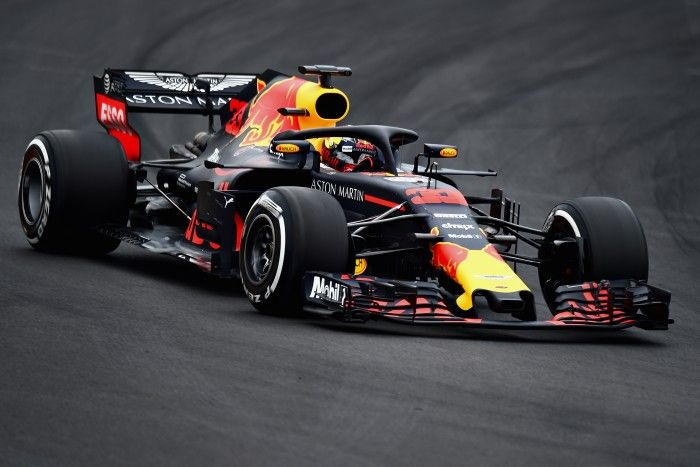
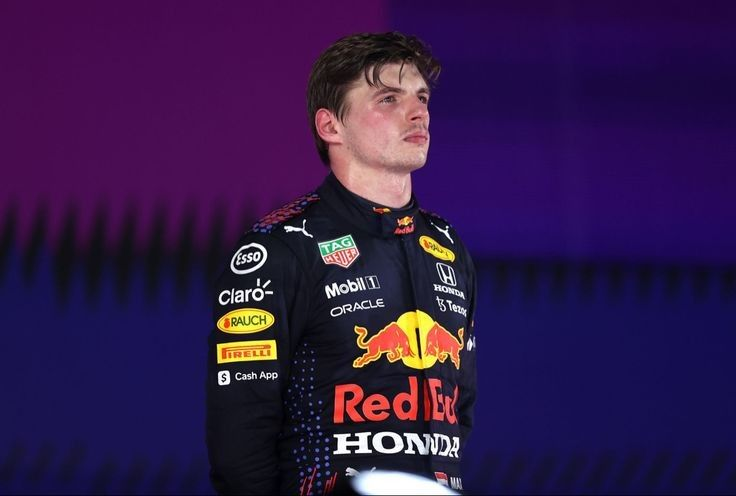

Max began karting at a young age, developing exceptional racecraft, precision, and competitive instinct through years of competition. Those early experiences laid the foundation for his journey to Formula 1.
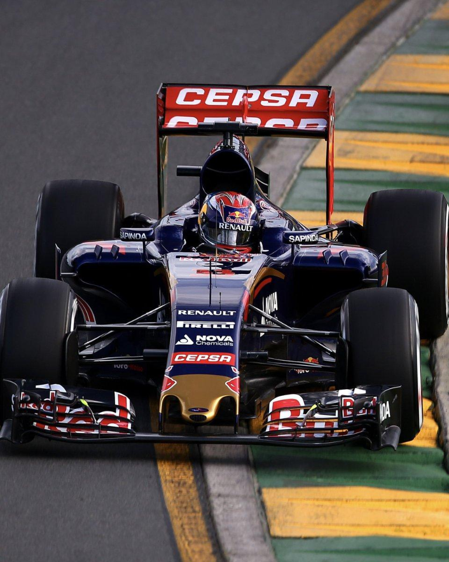
At 17, Max made his Formula 1 debut with Scuderia Toro Rosso, becoming the youngest driver to start a Grand Prix. His speed and composure immediately marked him as a rare talent.
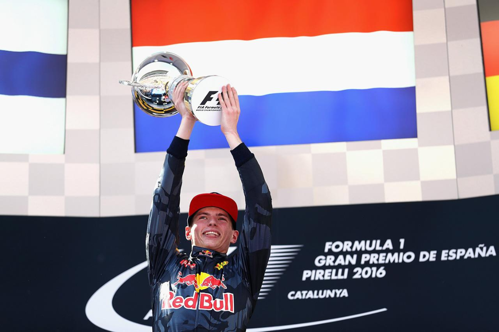
On his Red Bull Racing debut in Spain, Max held his nerve to win at 18—the youngest Formula 1 race winner in history. It was the first of many unforgettable victories.
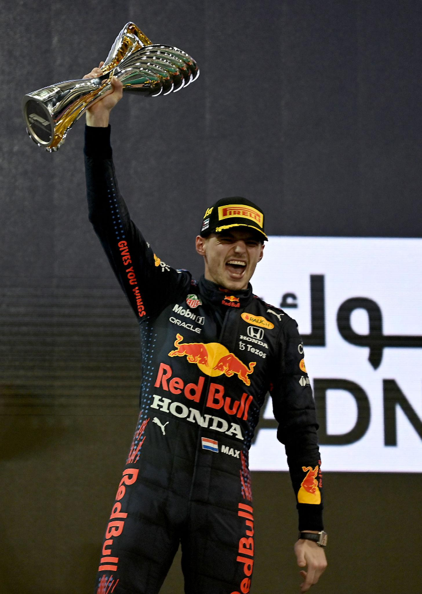
A season-long fight went down to the final lap in Abu Dhabi. Max took his first Drivers’ Championship in unforgettable fashion, capping one of the sport’s most dramatic seasons.
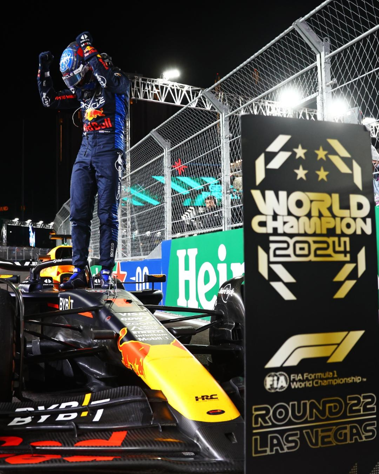
Four titles in a row. From a dominant start to a hard-fought finish, Max secured his place among Formula 1’s greats and cemented a legacy built on relentless consistency.
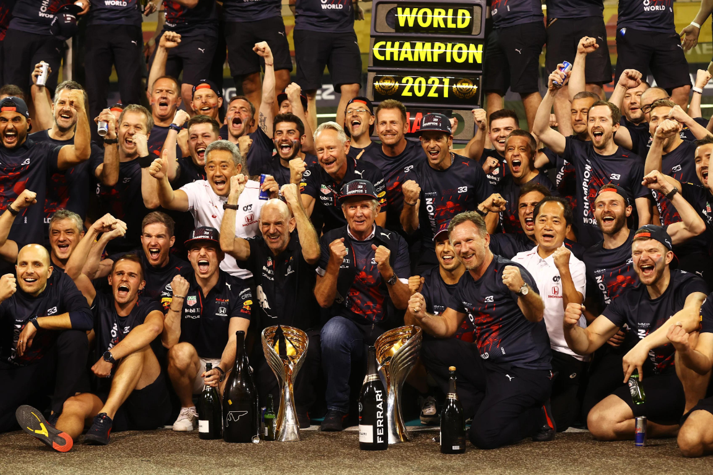
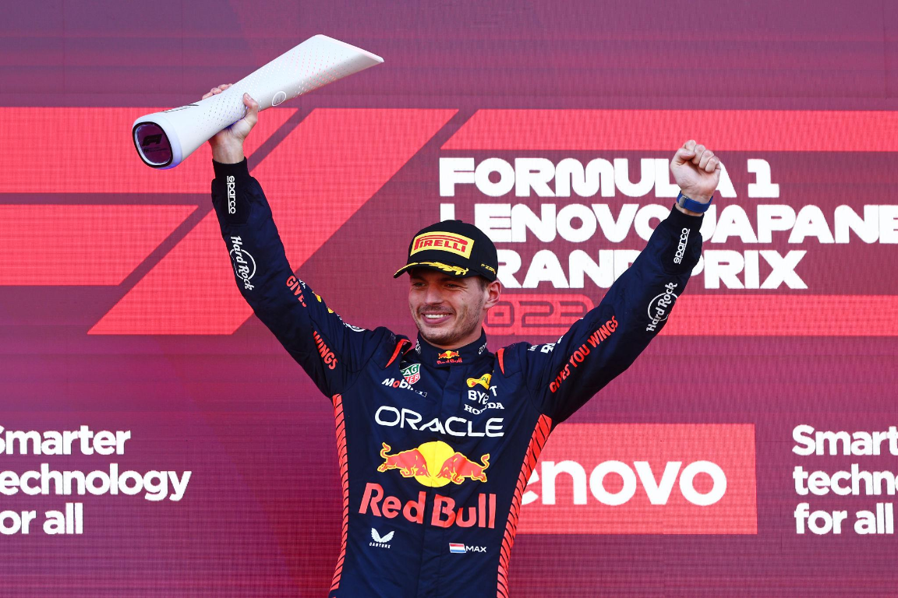
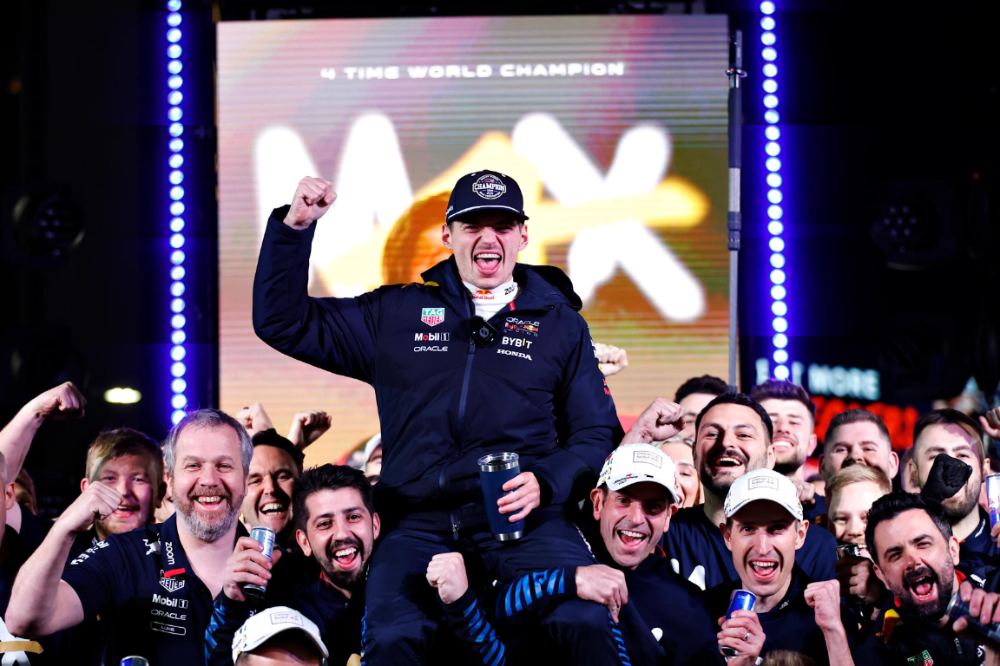
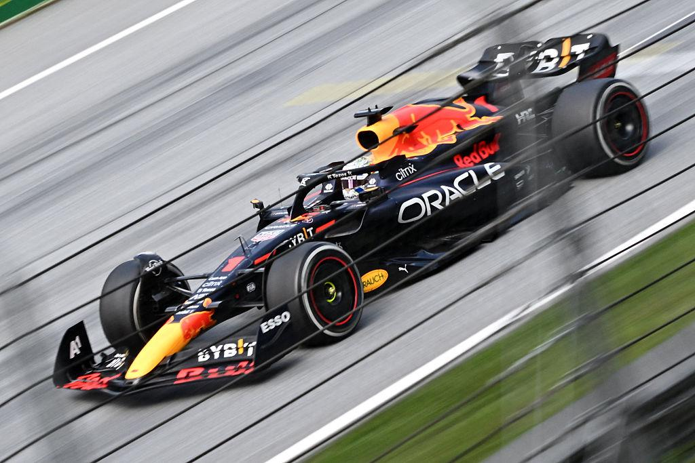
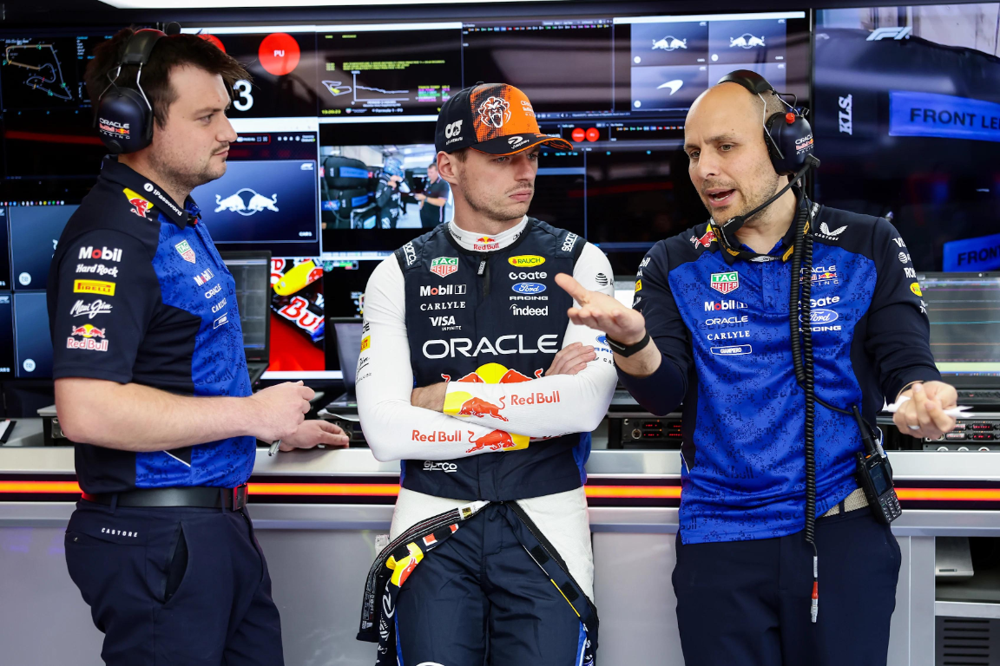
MAX VERSTAPPEN
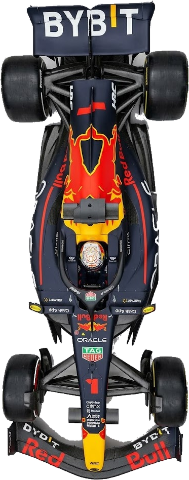
Albert Park Grand Prix Circuit
P6 (8 pts)
Shanghai Audi International Circuit
DNF (P16)
Suzuka Circuit
P8 (4 pts)
Miami International Autodrome
P5 (10 pts)
Circuit Gilles Villeneuve
P3 (15 pts)
Monaco Circuit
DNF (P22)
Circuit de Barcelona
P4 (12 pts)
Red Bull Ring
P2 (18 pts)
Silverstone Circuit
DNF (P20)
Circuit of Spa-Francorchamps
P3 (15 pts)
Hungaroring
P2 (18 pts)
MASCOT Circuit Zandvoort
DNF (P22)
Monza Circuit
P3 (15 pts)
MADRING Sur
P2 (18 pts)
Baku City Circuit
P2 (18 pts)
PETRONAS Sepang International Circuit
P1 (25 pts)
Marina Bay Street Circuit
P1 (25 pts)
Circuit of the Americas
UPCOMING
Autódromo Hermanos Rodríguez
UPCOMING
Interlagos Circuit
UPCOMING
Las Vegas Strip Circuit
UPCOMING
Lusail International Circuit
UPCOMING
Yas Marina Circuit
UPCOMING
Discover the journey of Max Verstappen, from a young racing prodigy to a multiple-time Formula 1 World Champion, dominating the track with fearless precision, relentless speed, and an unbreakable winning mindset.
EXPLORE THE 2026 F1 SEASON